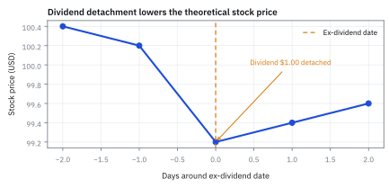
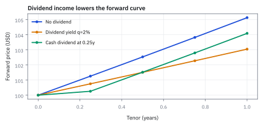
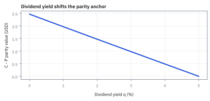

19.4 Dividends in the Formulas
ปันผลคือเงินที่คนถือหุ้นได้แต่คนถือสัญญาไม่ได้ ต้องหักออกที่มูลค่าวันนี้ทั้งใน forward และใน option และมันคือเหตุผลเดียวที่การใช้สิทธิ์ call แบบ American ก่อนกำหนดอาจคุ้ม
หุ้นราคา \$110 พรุ่งนี้ขึ้นเครื่องหมาย XD ของปันผล \$2 คุณถือ call แบบ American strike \$100 ซึ่งจะเหลืออายุ 3 เดือนหลังวันนั้น ดอกเบี้ย 5% ความผันผวน 20% ต่อปี เพื่อนบอกว่า “call อยู่ใน money แล้ว ใช้สิทธิ์วันนี้เลย จะได้หุ้นพร้อมปันผล ไม่อย่างนั้นพรุ่งนี้ราคาหุ้นหล่นไป \$2” ควรใช้สิทธิ์ไหม และถ้าหุ้นอยู่ที่ \$120 ล่ะ?
ลองตอบก่อนเปิดเฉลย
ที่ \$110 ไม่ควร ใช้สิทธิ์ได้ \$10 แต่ถือต่อ call มีค่า \$10.29 (call ยุโรปบนหุ้นหลังปันผล \$108) ที่ \$120 ควร ใช้สิทธิ์ได้ \$20 ถือต่อมีค่าแค่ \$19.40 จุดแบ่งอยู่ที่หุ้นราว \$111.91 และถ้าปันผลไม่เกิน $100(1-e^{-0.05(0.25)})=\$1.24$ ไม่มีราคาหุ้นไหนที่ใช้สิทธิ์ก่อนแล้วคุ้มเลย
สิ่งที่เราจะสร้าง
19.1 ขั้นที่ 7 หักปันผลออกจากราคา forward แบบย่อ หน้านี้ทำให้ครบ: ลงบัญชี cash-and-carry ที่มีปันผลก้อนหนึ่ง ดูว่าทำไมราคาหุ้นลดลงเท่าปันผลในวัน XD เขียนปันผลเป็นอัตรา $q$ แล้วอ่านปันผลย้อนจากราคา futures
ครึ่งหลังพาปันผลเข้าไปใน option: ต้นไม้หนึ่งงวดของ 18.3 สูตร Black–Scholes ของ 14.2 และ put–call parity ของ 14.4 แล้วจบที่คำถามของโจทย์เปิดเรื่อง ว่าเมื่อไรการใช้สิทธิ์ call ก่อนวัน XD จึงคุ้ม
ศัพท์ที่ใช้ในหัวข้อนี้
- Ex-dividend date (XD)
- วันแรกที่คนซื้อหุ้นไม่ได้ปันผลรอบนั้น ราคาหุ้นจึงลดลงราวเท่าปันผลในเช้าวันนั้น ใช้กำหนดว่าใครได้ปันผล และเป็นวันที่ต้องตัดสินใจเรื่องใช้สิทธิ์ call ก่อนกำหนด
- Dividend yield
- ปันผลเขียนเป็นอัตราต่อปีของราคาหุ้น $q$ เหมือนไหลออกมาต่อเนื่อง เหมาะกับดัชนีที่มีหุ้นหลายร้อยตัวจ่ายกระจายทั้งปี ส่วนหุ้นตัวเดียวที่จ่ายเป็นก้อนใช้ปันผลเป็นเงินพร้อมวันจ่ายแม่นกว่า
- Prepaid forward
- จ่ายเงินวันนี้เพื่อรับหุ้นหนึ่งหุ้นในวันส่งมอบ ถ้าหุ้นจ่ายปันผลระหว่างทาง ต้นทุนคือ $S_0-D_0$ หรือ $S_0e^{-qT}$ ถูกกว่าราคาหุ้น เพราะคนรับหุ้นทีหลังไม่ได้ปันผล
- Implied dividend
- ปันผลที่อ่านย้อนจากราคา futures หรือ forward ในตลาด โต๊ะใช้ตัวนี้แทนการเดาปันผลเอง และใช้ตรวจว่าราคา futures ผิดปกติหรือไม่
- American call
- call ที่ใช้สิทธิ์ได้ทุกวันจนหมดอายุ ต่างจาก call ยุโรปที่ใช้ได้วันสุดท้ายเท่านั้น ถ้าหุ้นไม่จ่ายปันผล สิทธิ์พิเศษนี้ไม่มีค่า
- Early exercise
- การใช้สิทธิ์ option แบบ American ก่อนวันหมดอายุ กับ call ทำแล้วเสียดอกเบี้ยของ strike ที่จ่ายเร็ว จึงมีโอกาสคุ้มเฉพาะเมื่อปันผลที่ได้มากกว่าดอกเบี้ยก้อนนั้น (ขั้นที่ 8)
สัญลักษณ์และหน่วย
| สัญลักษณ์ | ความหมาย | หน่วย |
|---|---|---|
| $S_0,\ S_T$ | ราคาหุ้นวันนี้ และวันส่งมอบ | \$ ต่อหุ้น |
| $D,\ t_D$ | ปันผลเป็นเงิน และเวลาที่จ่าย | \$ ต่อหุ้น, ปี |
| $D_0$ | มูลค่าวันนี้ของปันผลทุกก้อนก่อนวันส่งมอบ | \$ ต่อหุ้น |
| $q$ | ปันผลเป็นอัตราต่อปีแบบต่อเนื่อง | ต่อปี |
| $c$ | ปันผลต่องวดในต้นไม้ เป็นสัดส่วนของราคาตั้งต้น | ไม่มีหน่วย |
| $r,\ T,\ \tau$ | ดอกเบี้ยต่อเนื่อง อายุสัญญา และเวลาที่เหลือหลังวัน XD | ต่อปี, ปี, ปี |
| $F$ | ราคา forward สำหรับส่งมอบที่ $T$ | \$ ต่อหุ้น |
| $K,\ \sigma$ | strike และความผันผวนต่อปี | \$ ต่อหุ้น, ต่อรากที่สองของปี |
| $C,\ P,\ \Phi$ | ราคา call, put และ CDF ของ normal มาตรฐาน | \$ ต่อหุ้น, ไม่มีหน่วย |
| $u,\ d,\ R,\ p,\ x,\ y$ | ตัวคูณขึ้น ลง เงินฝาก น้ำหนักตั้งราคา จำนวนหุ้น และเงินสดในพอร์ตเลียนแบบ | ไม่มีหน่วย, หุ้น, \$ |
| $S^{*}$ | ราคาหุ้นต่ำสุดที่ใช้สิทธิ์ก่อนวัน XD แล้วคุ้ม | \$ ต่อหุ้น |
ขั้นที่ 1 — ลองด้วยมือ: cash-and-carry ที่มีปันผลหนึ่งก้อน
โจทย์ให้อะไรมาบ้าง: หุ้น $S_0=\$100$ จ่ายปันผล $D=\$1$ ที่ $t_D=0.25$ ปี forward อายุ $T=0.5$ ปี ดอกเบี้ย 5% ต่อปีแบบต่อเนื่อง ทำรายการ $A$ ของ 19.1: กู้ \$100 ซื้อหุ้น ขาย forward ที่ $F$ ปันผลที่ได้เอาไปฝากทันทีจนถึงวันส่งมอบ หา $F$ ที่ทำให้ผลสุดท้ายเป็นศูนย์
ในวันส่งมอบ หุ้นถูกส่งตามสัญญาได้ $F$ ต้องคืนหนี้ \$100 ที่โตมาครึ่งปี และมีปันผล \$1 ที่ฝากไว้สามเดือนโตเป็น 1.0126 ศูนย์ของบรรทัดแรกคือราคาที่ไม่มีใครเก็บเงินฟรีได้
คำตอบที่ล่อใจคือเอา 102.5315 ลบ 1 ได้ 101.5315 ผิดไป 1.26 เซนต์ต่อหุ้น เพราะปันผลมาถึงก่อนวันส่งมอบสามเดือน คนถือหุ้นเอามันไปฝากต่อได้ forward จึงต้องต่ำลงมากกว่า \$1 เล็กน้อย
คำตอบ: forward ที่ยุติธรรมคือ \$101.5189 ต่ำกว่ากรณีไม่มีปันผล \$1.0126
ตรวจเองใน 10 วินาที: ดอกเบี้ยของ \$1 นานสามเดือนที่ 5% คือราว $1(0.05)(0.25)=0.0125$ จึงได้ราว 1.0125 ใกล้ 1.0126
ขั้นที่ 2 — ทำไมราคาหุ้นลดลงเท่าปันผลในวัน XD
ขั้นที่ 1 สมมติเงียบ ๆ ว่าหุ้นที่ส่งมอบคือหุ้นหลังปันผลออกไปแล้ว ขั้นนี้ดูว่าทำไมราคาหุ้นต้องลดลงเท่าปันผล และหุ้นหนึ่งหุ้นวันนี้แยกเป็นอะไรได้บ้าง ให้ $S_{\text{cum}}$ คือราคาก่อนวัน XD และ $S_{\text{ex}}$ คือราคาหลัง ห่างกันชั่วข้ามคืน จึงไม่นับดอกเบี้ย
บรรทัดแรกคือซื้อหุ้นก่อน XD ได้ปันผล แล้วขายหลัง XD ถ้าผลรวมเป็นบวก ใครก็ทำได้เงินฟรีทุกไตรมาส ถ้าติดลบ ทุกคนจะเลื่อนการซื้อไปหลัง XD ราคาจึงต้องลดลงเท่าปันผลพอดี ของจริงลดน้อยกว่าเล็กน้อยเพราะภาษีของปันผล และราคาขยับด้วยข่าวอื่นในวันเดียวกัน
บรรทัดที่สามมองหุ้นหนึ่งหุ้นเป็นสองชิ้น: สิทธิ์รับปันผลก่อนวันส่งมอบ มีค่า $D_0$ กับสิทธิ์รับหุ้นในวันส่งมอบ ซึ่งคือ prepaid forward มีค่า $e^{-rT}F$ แก้หา $F$ ได้สูตรเดียวกับ 19.1 ขั้นที่ 7 และกับตัวเลขของขั้นที่ 1
Figure 19.4a — ราคาหุ้นรอบวัน XD

ราคาสมมติห้าวันรอบวัน XD (วันที่ −2 ถึง 2) คือ 100.4, 100.2, 99.2, 99.4, 99.6 เส้นประคือวัน XD ราคาลดจาก 100.2 เป็น 99.2 เท่ากับปันผล \$1.00 พอดี ตามบรรทัดที่สองของขั้นที่ 2 วันอื่นขยับวันละ 0.20 เป็นเพียงภาพประกอบ ของจริงวัน XD มีข่าวอื่นและภาษีปะปน ราคาจึงไม่ลดเท่าปันผลพอดีแบบนี้
ขั้นที่ 3 — ปันผลเป็นอัตรา: ซื้อหุ้นไม่ครบหนึ่งหุ้น แล้วให้ปันผลซื้อเพิ่ม
ดัชนีมีหุ้นหลายร้อยตัว ปันผลไหลเข้ามาเกือบทุกวัน ลงบัญชีทีละก้อนไม่ไหว จึงเขียนเป็นอัตรา $q$ ต่อปี ต้องการมีหุ้นครบหนึ่งหน่วยในวันส่งมอบ แต่ปันผลเอาไปซื้อหุ้นเพิ่มได้เรื่อย ๆ จำนวนหุ้นจึงโตในอัตรา $q$ วันนี้ซื้อแค่ $e^{-qT}$ หน่วยก็พอ
บรรทัดแรกคือเหตุผลที่เลือก $e^{-qT}$: ปันผลซื้อหุ้นเพิ่มจนจำนวนโตเป็น $e^{qT}$ เท่า คูณกันได้หนึ่งพอดี บรรทัดที่สองคือกู้เงิน $S_0e^{-qT}$ มาซื้อหุ้นชุดนั้น แล้วหนี้โตเป็น $F$ ในวันส่งมอบ อัตราสุทธิจึงเป็น $r-q$ ดอกเบี้ยดันราคาล่วงหน้าขึ้น ปันผลดันลง
ปันผล 2% ต่อปีของหุ้น \$100 ครึ่งปีคือราว \$1 จึงได้ 101.5113 ใกล้ 101.5189 ของปันผลก้อน \$1 ในขั้นที่ 1 ต่างกันแค่ว่าเงินออกเมื่อไร
Figure 19.4b — ราคา forward สามแบบตามอายุสัญญา

อายุสัญญา 0, 0.25, 0.5, 0.75 และ 1 ปี หุ้น \$100 ดอกเบี้ย 5% เส้นไม่มีปันผลไปถึง 105.13 ที่หนึ่งปี เส้นปันผล 2% ต่อปีไปถึง 103.05 เส้นปันผลก้อน \$1 ที่ 0.25 ปีหักปันผลตั้งแต่อายุ 0.25 เป็นต้นไป ได้ 100.26, 101.52, 102.80 และ 104.09 ที่ครึ่งปีสองเส้นล่างเกือบทับกัน (101.52 กับ 101.51) แต่ที่หนึ่งปีเส้นปันผลก้อนสูงกว่า เพราะทั้งปีมีปันผลแค่ \$1 ขณะที่อัตรา 2% จ่ายราว \$2
ขั้นที่ 4 — อ่านปันผลย้อนจากราคา futures
โจทย์ให้อะไรมาบ้าง: ดัชนี 5,000 จุด ดอกเบี้ย 5% ES อายุ 6 เดือนเสนอ 5,088.27 จุด ตลาดคาดปันผลเท่าไร แล้วราคา 5,200 จากโจทย์เปิดเรื่องของ 19.1 บอกอะไร แก้ขั้นที่ 3 หา $q$
โต๊ะไม่ต้องเดาปันผลของหุ้นห้าร้อยตัวเอง ราคา futures บอกไว้แล้วว่าตลาดคิดว่าจะได้ปันผลเท่าไร ราคา 5,088.27 ตรงกับ 1.50% ต่อปี ซึ่งเป็นตัวเลขที่ 19.1 ขั้นที่ 7 ใช้
ราคา 5,200 ให้ปันผลติดลบ 2.84% ต่อปี ซึ่งเป็นไปไม่ได้ ไม่มีดัชนีไหนเก็บเงินจากคนถือหุ้น ราคาแบบนี้แปลว่า futures แพงเกินจริง ตรงกับที่ 19.1 หาได้ด้วย cash-and-carry
คำตอบ: 5,088.27 บอกปันผล 1.50% ต่อปี ส่วน 5,200 บอกปันผล −2.84% ต่อปี คือสัญญาณว่าราคา futures ผิด
ตรวจเองใน 10 วินาที: $5{,}000e^{(0.05-0.015)(0.5)}=5{,}000e^{0.0175}=5{,}088.27$ กลับมาที่ราคาเดิม
ขั้นที่ 5 — ต้นไม้หนึ่งงวดที่มีปันผล: ปันผลเปลี่ยนน้ำหนัก แต่ไม่เปลี่ยน delta
ก่อนเข้า Black–Scholes ดูผลของปันผลบนต้นไม้ของ 18.3 ซึ่งเห็นทุกตัวเลข หุ้น \$100 งวดหน้าเป็น 110 หรือ 90 และจ่ายปันผล $cS_0$ โดย $c=1\%$ ตอนสิ้นงวด เงินฝากโต $R=1.02$ call strike 100 จ่าย $C_u=10$ หรือ $C_d=0$ ตามราคาหลังปันผล พอร์ตเลียนแบบถือหุ้น $x$ หุ้นซึ่งได้ปันผลด้วย และเงินสด $y$
ลบสองบรรทัดแรกกัน ปันผล $cS_0x$ หักล้างกันหมด delta $x$ จึงขึ้นกับราคาหลังปันผลเท่านั้น ได้ 0.5 เท่ากรณีไม่มีปันผล แต่เงินสดเปลี่ยน เพราะหุ้นที่ถือจ่ายปันผลมาช่วยใช้หนี้ พอร์ตจึงกู้ได้มากขึ้น ราคา call ออกมา 5.3922
บรรทัดล่างเป็นวิธีเดียวกันแบบน้ำหนักตั้งราคา ถ้าไม่มีปันผล $p=(1.02-0.90)/0.20=0.60$ call เป็น $0.60(10)/1.02=5.8824$ ปันผลลดน้ำหนักของขาขึ้นเหลือ 0.55 เพราะผลตอบแทนรวมของหุ้นต้องเท่าดอกเบี้ย ส่วนที่มาเป็นปันผลแล้วจึงไม่ต้องมาจากราคา เงื่อนไขไม่มีเงินฟรีกลายเป็น $d+c\lt R\lt u+c$
ขั้นที่ 6 — Black–Scholes ที่มีปันผล: เปลี่ยนแค่ forward
14.2 ขั้นที่ 11 ใส่ปันผลเข้า Black–Scholes แล้ว ขั้นนี้เขียนให้เห็นว่าสิ่งเดียวที่เปลี่ยนคือ forward ของขั้นที่ 3 ใต้ $\mathbb Q$ หุ้นโตแค่ $r-q$ เพราะส่วน $q$ ออกมาเป็นปันผล ราคาหุ้นวันหมดอายุจึงเขียนรอบ forward ได้ ตัวอย่าง: $S_0=K=100$, $T=0.5$, $r=5\%$, $q=2\%$, $\sigma=20\%$
บรรทัดแรกคือหุ้นใต้ $\mathbb Q$ ของ 14.2 ที่เขียนด้วย $F=S_0e^{(r-q)T}=101.5113$ บรรทัดที่สองได้จากการคิดค่าเฉลี่ยคิดลดแบบเดียวกับ 14.2 ทุกขั้น ต่างแค่ใส่ $F$ แทน $S_0e^{rT}$ ดังนั้นปันผลเข้าสูตรทางเดียวคือทำให้ forward ต่ำลง
ถ้าไม่มีปันผล call เป็น 6.8887 และ put เป็น 4.4197 ปันผล 2% ทำให้ call ถูกลง 0.5811 เพราะคนถือ call ไม่ได้ปันผล และ put แพงขึ้น 0.4139 เพราะปันผลดึงราคาหุ้นลง บรรทัด put มาจาก parity ของขั้นที่ 7
ขั้นที่ 7 — put–call parity ที่มีปันผล
14.4 สร้าง parity จาก payoff อย่างเดียว ที่นี่ใส่ปันผลเข้าไปด้วยเหตุผลเดิม: call ลบ put จ่าย $S_T-K$ ในวันหมดอายุ สร้างสิ่งเดียวกันจากหุ้นกับเงินฝาก ฝั่งหุ้นใช้ prepaid forward ของขั้นที่ 2 และ 3 เพราะคนถือ call กับ put ไม่ได้ปันผล
บรรทัดแรกสำหรับปันผลเป็นอัตรา บรรทัดที่สี่สำหรับปันผลเป็นก้อน ทั้งสองแบบฝั่งหุ้นคือเงินที่ต้องจ่ายวันนี้เพื่อได้หุ้นหนึ่งหุ้นในวันหมดอายุ ตัวเลขของขั้นที่ 6 ผ่าน parity พอดี
ถ้าลืมปันผล จะได้ $100-97.5310=2.4690$ แล้วคิดว่า call ถูกเกินไปเกือบหนึ่งดอลลาร์ทั้งที่ราคาถูกต้อง นี่คือเหตุผลที่ 14.4 ใส่ $q$ ตั้งแต่ต้น
Figure 19.4c — ปันผลเลื่อนค่า call ลบ put

แกนนอนคือ dividend yield $q$ 0% ถึง 5% (51 จุด) แกนตั้งคือ $100e^{-0.5q}-100e^{-0.025}$ ของขั้นที่ 7 ($S_0=K=100$, $r=5\%$, $T=0.5$) ที่ $q=0$ ได้ 2.4690 ที่ 2% ได้ 1.4740 และที่ 5% ได้ศูนย์พอดี เพราะเมื่อ $q=r$ forward เท่ากับ strike call กับ put จึงราคาเท่ากัน
ขั้นที่ 8 — call แบบ American: ปันผลต้องชนะดอกเบี้ยของ strike ก่อน
ถ้าหุ้นไม่จ่ายปันผล การใช้สิทธิ์ call ก่อนกำหนดไม่มีวันคุ้ม เพราะ call มีค่าอย่างน้อย $S-Ke^{-r\tau}$ ซึ่งมากกว่า $S-K$ ที่ได้จากการใช้สิทธิ์ ปันผลเปลี่ยนเรื่องนี้ ณ ชั่วขณะก่อนวัน XD เทียบสองทาง: ใช้สิทธิ์ได้หุ้นที่ยังมีปันผลติดอยู่ หรือถือต่อแล้วหุ้นลดลง $D$ หลังจากนั้นเหลือเวลา $\tau$ ไม่มีปันผลอีก
บรรทัดที่สองมาจาก parity ของขั้นที่ 7 บนหุ้นหลังปันผล: call เท่ากับหุ้นลบ strike ที่คิดลดบวก put และ put ไม่ติดลบ จึงได้ขอบล่าง ลบสองบรรทัดแรก $S$ หักล้างกันหมด เหลือการเทียบที่ง่ายมาก: ใช้สิทธิ์ได้ปันผล $D$ แต่ต้องจ่าย strike เร็วขึ้น เสียดอกเบี้ยของ strike ช่วงที่เหลือ
ถ้าปันผลไม่เกิน \$1.2422 ผลต่างไม่มีทางเป็นบวก ใช้สิทธิ์ก่อนไม่มีวันคุ้ม ไม่ว่าหุ้นราคาเท่าไร ปันผล \$1 จึงไม่ต้องคิดเลย ปันผล \$2 ผ่านเงื่อนไขนี้ แต่นี่เป็นเงื่อนไขจำเป็นเท่านั้น ยังต้องเทียบกับค่าเต็มของการถือต่อในขั้นที่ 9
ขั้นที่ 9 — คำตอบของโจทย์เปิดเรื่อง: ใช้สิทธิ์ที่ \$110 หรือ \$120
โจทย์ให้อะไรมาบ้าง: ปันผล $D=\$2$ strike 100 หลังวัน XD เหลือ $\tau=0.25$ ปี ดอกเบี้ย 5% ความผันผวน 20% ไม่มีปันผลอีก ค่าของการถือต่อจึงเท่ากับ call ยุโรปบนหุ้นหลังปันผล ($S-D$) ใช้สูตรของขั้นที่ 6 ที่ $q=0$ ซึ่ง $\sigma\sqrt\tau=0.1$ และ $\frac12\sigma^2\tau=0.005$
ที่ \$110 หุ้นหลังปันผลเป็น 108 call ที่ถือต่อมีค่า 10.29 มากกว่า 10 ที่ได้จากการใช้สิทธิ์ ปันผล \$2 ไม่พอชดเชยค่าเวลาที่เหลือ ที่ \$120 call ลึกใน money จนแทบไม่เหลือค่าเวลา ถือต่อได้ 19.40 น้อยกว่า 20 จึงควรใช้สิทธิ์ก่อนวัน XD
บรรทัดสุดท้ายหาด้วยการแบ่งครึ่งช่วงในโค้ด: ราคาที่สองทางเท่ากันคือ 111.91 ปันผลยิ่งมาก จุดแบ่งยิ่งต่ำ: 117.21 ที่ \$1.50, 107.70 ที่ \$3 และ 105.53 ที่ \$4 ส่วนปันผลไม่เกิน 1.2422 ไม่มีจุดแบ่งเลย ตรงกับขั้นที่ 8
คำตอบ: ที่ \$110 ถือต่อ (10.29 เทียบ 10) ที่ \$120 ใช้สิทธิ์ (20 เทียบ 19.40) เพื่อนพูดถูกแค่ครึ่งเดียว
ตรวจเองใน 10 วินาที: ถือต่อมีค่าอย่างน้อย $108-98.7578=9.24$ ตามขั้นที่ 8 ค่า 10.29 ที่ได้สูงกว่านั้น 1.05 ซึ่งคือค่าของ put ในตัวที่ยังเหลือ
ปันผลก้อนใหญ่ขึ้น: หุ้นราคาเท่าไรจึงเริ่มใช้สิทธิ์คุ้ม?
ใช้โจทย์เดียวกับขั้นที่ 9 ทุกแถว: strike \$100 หลังวัน XD เหลือ 0.25 ปี ดอกเบี้ย 5% ความผันผวน 20% ไม่มีปันผลอีก เปลี่ยนเฉพาะปันผลก้อน $D$ ราคาหุ้นในคอลัมน์ขวาคือราคา ก่อน XD ที่ใช้สิทธิ์ทันทีได้เงิน $S-100$ เท่ากับมูลค่าถือต่อบนหุ้นหลัง XD ราคา $S-D$ พอดี
| ปันผล $D$ | ราคาจุดแบ่ง |
|---|---|
| \$1.00 | ไม่มีจุดแบ่ง |
| \$1.50 | \$117.21 |
| \$2.00 | \$111.91 |
| \$3.00 | \$107.70 |
| \$4.00 | \$105.53 |
อ่านแถว \$2: ที่หุ้น \$110 ใช้สิทธิ์ได้ \$10 แต่รอได้ \$10.29 จึงถือต่อ; ที่หุ้น \$120 ใช้สิทธิ์ได้ \$20 แต่รอได้ \$19.40 จึงใช้สิทธิ์ จุดแบ่ง \$111.91 อยู่ระหว่างสองราคานี้ เมื่อปันผลสูงขึ้น จุดแบ่งลดลง ไม่ใช่สูงขึ้น ส่วนปันผลไม่เกิน \$1.2422 ไม่มีจุดแบ่งเลย (ถือต่อคุ้มกว่าเสมอ) เพราะปันผลยังไม่ชดเชยดอกเบี้ยของ strike ที่จ่ายเร็ว
ศัพท์เรียกจุดแบ่งนี้ว่า early-exercise boundary: เหนือจุดแบ่งใช้สิทธิ์ก่อน XD คุ้มกว่า ภายใต้สมมติฐานของโจทย์นี้ รูปวาดเก่าที่เก็บไว้ดูเปรียบเทียบ (ไม่ใช่ผลคำนวณ) วาดขอบเพิ่มขึ้นจนถึง 104.6 เมื่อปันผลเพิ่ม ซึ่งสวนทางกับตารางและระบายบริเวณใช้สิทธิ์แม้ไม่มีปันผล อย่าใช้รูปนั้นตัดสินใจ

คำถามที่ควรถามออกมาดัง ๆ
ถ้าราคาหุ้นลดเท่าปันผลพอดี การซื้อก่อน XD เพื่อเอาปันผลได้อะไร? ไม่ได้อะไร ได้ปันผล \$1 แต่หุ้นลดลง \$1 และคนส่วนใหญ่ยังต้องเสียภาษีปันผล ผลสุทธิจึงมักติดลบ
ทำไมดัชนีใช้ $q$ ได้ แต่หุ้นตัวเดียวควรใช้ปันผลเป็นก้อน? ดัชนีมีปันผลไหลเข้าเกือบทุกวัน อัตราเดียวจึงใกล้ของจริง หุ้นตัวเดียวจ่ายปีละไม่กี่ครั้ง Figure 19.4b แสดงว่าที่หนึ่งปี สองแบบต่างกันราว \$1 และกับ option อายุสั้นที่คร่อมวัน XD ปันผลก้อนเดียวเปลี่ยนการตัดสินใจได้ทั้งหมดแบบขั้นที่ 9
ปันผลทำอะไรกับ put แบบ American? ทำให้การใช้สิทธิ์ put ก่อนวัน XD น่าสนใจน้อยลง เพราะรอให้หุ้นลดลงเท่าปันผลก่อนแล้วค่อยใช้สิทธิ์ได้ราคาดีกว่า
ความผิดที่ให้คำตอบผิดแบบเงียบ ๆ
หักปันผลที่มูลค่าหน้าตั๋ว: 102.5315 ลบ 1 ได้ 101.5315 แทน 101.5189 ผิด 1.26 เซนต์ต่อหุ้น หรือราว \$12,578 ต่อหุ้นล้านหุ้น
ลืมปันผลในราคา option: call ของขั้นที่ 6 จะเป็น 6.8887 แทน 6.3076 แพงเกิน 9.2% และ put ถูกไป 0.4139
ใช้ parity แบบไม่มีปันผล: ได้ 2.4690 แทน 1.4740 แล้วเห็นส่วนต่างเกือบ \$1 ที่ไม่มีอยู่จริง
ใช้สิทธิ์ call ใน money ทุกครั้งก่อนวัน XD: ที่ \$110 เสีย 0.29 ต่อหุ้น หรือ \$28.89 ต่อสัญญา 100 หุ้น
คิดว่าปันผลมากขึ้นต้องรอราคาหุ้นสูงขึ้นก่อนใช้สิทธิ์: ตารางข้างบนแสดงตรงข้าม: ปันผลมากขึ้นทำให้จุดแบ่งต่ำลง และปันผลไม่เกิน \$1.2422 ไม่มีจุดแบ่งเลย
ใช้ทำอะไรบนโต๊ะจริง
โต๊ะ index arbitrage อ่านปันผลย้อนจากราคา futures ทุกวันแบบขั้นที่ 4 และเทียบกับประมาณการปันผลของตัวเอง ถ้าต่างกันมากคือโอกาสหรือคำเตือน ส่วนคนดูแล option บนหุ้นรายตัวเก็บตารางวัน XD ไว้ทุกตัว เพราะราคา delta และการตัดสินใจใช้สิทธิ์เปลี่ยนตรงวันนั้น
คนที่ขาย call แบบ American ต้องเตรียมรับการถูกใช้สิทธิ์ก่อนวัน XD เมื่อ call ลึกใน money และปันผลผ่านเกณฑ์ของขั้นที่ 8 ถ้าไม่ถูกใช้สิทธิ์ตามที่ควร ปันผลก้อนนั้นก็กลายเป็นกำไรของคนขาย
สามโจทย์ตรวจความเข้าใจ
1. หุ้น \$100 จ่ายปันผล \$0.50 สองครั้งที่ 0.25 และ 0.75 ปี forward อายุ 1 ปี ดอกเบี้ย 5% ราคา forward เป็นเท่าไร และต่ำกว่ากรณีไม่มีปันผลเท่าไร?
เฉลย
$D_0=0.5e^{-0.0125}+0.5e^{-0.0375}=0.493789+0.481597=0.975386$ ราคา $F=(100-0.975386)e^{0.05}=104.1017$ กรณีไม่มีปันผล $100e^{0.05}=105.1271$ ต่ำกว่า 1.0254 มากกว่าปันผลรวม \$1 เพราะปันผลแต่ละก้อนถูกฝากต่อจนถึงวันส่งมอบ
2. ดัชนี 5,000 ดอกเบี้ย 5% ES อายุ 6 เดือนเสนอ 5,050 ตลาดคาดปันผลเท่าไรต่อปี?
เฉลย
$q=0.05-2\ln(5{,}050/5{,}000)=0.05-2(0.0099503)=3.01\%$ ต่อปี สูงกว่า 1.50% ของขั้นที่ 4 ราคา futures ที่ต่ำลงแปลว่าตลาดคาดปันผลมากขึ้น
3. call แบบ American strike \$50 หลังวัน XD เหลืออายุ 6 เดือน ดอกเบี้ย 4% ปันผล \$0.80 ควรคิดเรื่องใช้สิทธิ์ก่อนวัน XD ไหม?
เฉลย
เกณฑ์คือ $50(1-e^{-0.04(0.5)})=50(1-0.980199)=0.9901$ ปันผล 0.80 ต่ำกว่าเกณฑ์ การใช้สิทธิ์ก่อนไม่มีวันคุ้มไม่ว่าหุ้นจะราคาเท่าไร ถือ call ต่อหรือขายทิ้งดีกว่าใช้สิทธิ์เสมอ
คำนวณซ้ำด้วย JavaScript
โค้ดนี้คิด forward ที่มีปันผลเป็นก้อนและเป็นอัตรา ปันผลที่อ่านจากราคา futures ต้นไม้หนึ่งงวดที่มีปันผล ราคา call และ put ที่มีปันผล parity และการตัดสินใจใช้สิทธิ์ call ก่อนวัน XD พร้อมจุดแบ่งของปันผลหลายขนาด แล้วพิมพ์ตัวเลขหลักออกมาหนึ่งบรรทัด
const {exp, log, sqrt, max} = Math;
function finite(name, x) {
if (typeof x !== 'number' || !Number.isFinite(x)) throw new TypeError(`${name} must be a finite number`);
return x;
}
function positive(name, x) {
if (finite(name, x) <= 0) throw new RangeError(`${name} must be positive`);
return x;
}
// Standard normal CDF by the series 0.5 + phi(x)(x + x^3/3 + x^5/15 + ...), accurate for |x| below about 8.
function Phi(x) {
finite('x', x);
let sum = x, prev = 0, term = x, k = 1;
while (sum !== prev) { prev = sum; k += 2; term *= x * x / k; sum = prev + term; }
return 0.5 + sum * exp(-0.5 * x * x - 0.91893853320467274178);
}
// Forward with known cash dividends [[D, t], ...] paid before T: (S - D0) e^{rT}.
function forwardCash({S, r, T, dividends}) {
positive('S', S); finite('r', r); positive('T', T);
let D0 = 0;
for (const [D, t] of dividends) {
if (positive('t', t) > T) throw new RangeError('dividend date must be within 0 to T');
D0 += positive('D', D) * exp(-r * t);
}
if (D0 >= S) throw new RangeError('dividends must be worth less than S');
return {D0, F: (S - D0) * exp(r * T)};
}
// Dividend yield q implied by a forward or futures price F.
function impliedYield({S, F, r, T}) {
return finite('r', r) - log(positive('F', F) / positive('S', S)) / positive('T', T);
}
// One-period tree where the stock pays c S0 at the end of the period; call struck at K.
function treeWithDividend({S0, u, d, c, R, K}) {
[S0, u, d, R].forEach((v, i) => positive(['S0', 'u', 'd', 'R'][i], v)); finite('c', c); finite('K', K);
if (!(d + c < R && R < u + c)) throw new RangeError('need d + c < R < u + c');
const Cu = max(u * S0 - K, 0), Cd = max(d * S0 - K, 0);
const x = (Cu - Cd) / ((u - d) * S0), y = (Cd - (d + c) * S0 * x) / R, p = (R - d - c) / (u - d);
return {p, x, y, C0: x * S0 + y, C0q: (p * Cu + (1 - p) * Cd) / R};
}
// European call and put with dividend yield q (forward F = S e^{(r - q)T}).
function euro({S, K, T, r, q = 0, sigma}) {
positive('S', S); positive('K', K); positive('T', T); finite('r', r); finite('q', q); positive('sigma', sigma);
const F = S * exp((r - q) * T), v = sigma * sqrt(T);
const d1 = (log(F / K) + 0.5 * v * v) / v, d2 = d1 - v;
const call = exp(-r * T) * (F * Phi(d1) - K * Phi(d2));
return {F, d1, d2, call, put: call - S * exp(-q * T) + K * exp(-r * T)};
}
// American call just before an ex-date with dividend D and tau years left afterwards (no later dividends).
function exDateChoice({S, D, K, r, tau, sigma}) {
if (finite('D', D) < 0 || D >= positive('S', S)) throw new RangeError('D must be in 0 to S');
const hold = euro({S: S - D, K, T: tau, r, sigma}).call;
return {exercise: S - K, hold, hurdle: K * (1 - exp(-r * tau))};
}
// Lowest stock price at which exercising before the ex-date wins (null when it never does).
function boundary({D, K, r, tau, sigma}) {
const gain = S => (S - K) - exDateChoice({S, D, K, r, tau, sigma}).hold;
let lo = K + D, hi = 10 * K;
if (gain(hi) <= 0) return null;
for (let k = 0; k < 200; k++) { const mid = (lo + hi) / 2; if (gain(mid) < 0) lo = mid; else hi = mid; }
return (lo + hi) / 2;
}
const one = forwardCash({S: 100, r: 0.05, T: 0.5, dividends: [[1, 0.25]]});
const option = {K: 100, r: 0.05, tau: 0.25, sigma: 0.2};
console.log(JSON.stringify({
one, noDividend: 100 * exp(0.025), withYield: 100 * exp(0.03 * 0.5),
impliedAt5088: impliedYield({S: 5000, F: 5088.27, r: 0.05, T: 0.5}), impliedAt5200: impliedYield({S: 5000, F: 5200, r: 0.05, T: 0.5}),
tree: treeWithDividend({S0: 100, u: 1.1, d: 0.9, c: 0.01, R: 1.02, K: 100}),
treeNoDividend: treeWithDividend({S0: 100, u: 1.1, d: 0.9, c: 0, R: 1.02, K: 100}).C0,
merton: euro({S: 100, K: 100, T: 0.5, r: 0.05, q: 0.02, sigma: 0.2}), plain: euro({S: 100, K: 100, T: 0.5, r: 0.05, sigma: 0.2}),
parity: 100 * exp(-0.01) - 100 * exp(-0.025), parityCash: 100 - one.D0 - 100 * exp(-0.025),
at110: exDateChoice({S: 110, D: 2, ...option}), at120: exDateChoice({S: 120, D: 2, ...option}),
boundaries: [1, 1.5, 2, 3, 4].map(D => boundary({D, ...option}))
}));ที่มาที่ไป
สูตรของ Black และ Scholes ในปี 1973 สมมติว่าหุ้นไม่จ่ายปันผล ปีเดียวกัน Robert Merton ขยายให้ปันผลไหลออกเป็นอัตราต่อเนื่อง ได้สูตรที่มี $e^{-qT}$ หน้าขาหุ้นซึ่งใช้กับดัชนีและอัตราแลกเปลี่ยนมาจนทุกวันนี้
ปันผลเป็นก้อนทำให้ call แบบ American ยุ่งขึ้น Fischer Black เสนอในปี 1975 ให้เทียบการใช้สิทธิ์ก่อนวัน XD กับการถือต่อแบบขั้นที่ 9 และ Roll, Geske และ Whaley ในช่วงปี 1977 ถึง 1981 หาสูตรปิดของ call แบบ American ที่มีปันผลหนึ่งก้อน กรณีที่มีปันผลหลายก้อนใช้ต้นไม้หรือวิธีเชิงตัวเลขของบทที่ 21
ข้อจำกัด: วิธีนี้สมมติอะไร และของจริงเป็นอย่างไร
| สมมติอะไร | ของจริง | ผลเวลาใช้งาน |
|---|---|---|
| รู้ปันผลแน่นอนทั้งจำนวนและวันจ่าย | ปันผลประกาศทีหลัง และถูกตัดได้ในช่วงวิกฤต | forward และราคา option คลาดไปตามปันผลที่เปลี่ยน |
| ปันผลไหลออกเป็นอัตราต่อเนื่อง | หุ้นรายตัวจ่ายเป็นก้อนไม่กี่ครั้งต่อปี | option อายุสั้นที่คร่อมวัน XD ประเมินผิดได้มาก |
| ราคาลดเท่าปันผลพอดี ไม่มีภาษี | ภาษีปันผลต่างกันตามผู้ถือ ราคามักลดน้อยกว่าปันผลเล็กน้อย | ราคาที่ยุติธรรมของแต่ละคนไม่เท่ากัน |
| หลังวัน XD ไม่มีปันผลอีก (ขั้นที่ 9) | หุ้นจ่ายหลายครั้งก่อนหมดอายุ | ต้องใช้ต้นไม้หรือวิธีเชิงตัวเลขตัดสินใจทุกวัน XD |
| ความผันผวนคงที่แบบ Black–Scholes | ความผันผวนต่างกันตาม strike และเวลา (14.4) | จุดแบ่ง $S^{*}$ ขยับตามความผันผวนที่ใช้ |
สิ่งที่ควรตอบได้หลังอ่าน
- หักปันผลที่มูลค่าวันนี้: $F=(S_0-D_0)e^{rT}=101.5189$ ต่ำกว่ากรณีไม่มีปันผล 1.0126 ไม่ใช่ 1.0000
- ปันผลเป็นอัตราให้ $F=S_0e^{(r-q)T}$ และราคา futures บอกปันผลที่ตลาดคาดได้ (1.50% ที่ 5,088.27 และ −2.84% ที่ 5,200 ซึ่งเป็นไปไม่ได้)
- ในต้นไม้ ปันผลลดน้ำหนักขาขึ้น (0.60 เหลือ 0.55) และราคา call (5.8824 เหลือ 5.3922) แต่ไม่เปลี่ยน delta
- ใน Black–Scholes ปันผลเข้าทาง forward อย่างเดียว: call 6.3076 put 4.8336 และ parity $S_0e^{-qT}-Ke^{-rT}=1.4740$
- ใช้สิทธิ์ call ก่อนวัน XD ต้องมีปันผลเกินดอกเบี้ยของ strike (\$1.2422) และหุ้นต้องสูงกว่าจุดแบ่ง (\$111.91 ที่ปันผล \$2)
บทที่ 20 เปลี่ยนจากของที่ถือไว้เป็นเงินกู้เอง: ดอกเบี้ยที่หน้านี้ถือว่าคงที่กลายเป็นเส้นที่ต่างกันตามอายุ และเหตุผลของ cash-and-carry ถูกใช้สร้างอัตราดอกเบี้ยล่วงหน้า